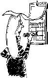

Back
Next

Amityville "Open Door"
celebrates its 14th
Group Anniversary
Sat. July 31st, 2004
Food, DJ, Raffles...
Speaker at 8:00pm
GROUP ANNIVERSARIES:
* Announce your group's anniversary; Send to
The
Bulletin,
c/o SIA office at least one month in advance. Attn: Editor
- Archives from page one
Now, while all of the information about who started your meeting and why is still fresh in your mind(s), is the perfect time to write it all down and preserve it for the future generations of Suffolk A. A.s Nothing prevents you from adding to the written records as
more events and changes happen.
*Note: We desperately need East End coordinators to help obtain group histories from Riverhead and points east.
-Why I Go from page one
alone, and thought I was functioning as a wife and mother, and so I couldn't have a problem. Never mind that my behavior while drinking was far from what it would have been sober. Never mind that my divorce was a consequence of my drinking.
Why did I feel drawn to A.A.? I went to my first meeting with my defenses up. I had not had a drink in ten months, and I had done it on my own. From my very first meeting, the spirituality so hard to verbalize about A.A. transcended my thoughts and my motives. Just when I would think nothing was being said that could help me, the power of A.A. sharing-if not the words themselves-would overwhelm me.
For me, coming into my first A.A. meeting was like coming home.
What keeps me going to A. A.? The warmth, the understanding, the sharing, the acceptance of me as me, the reminders of what drinking did to all of us.
-Anonymous, Malvern, PA.,, excerpted from
The
Grapevine
, January 1980.
We Don't Have to Drink to Die
We buried him yesterday. The County Corner had published the required notices for the next of kin and nobody had claimed the body. It was just his sponsor and myself, no preacher even; ther county doesn't pay for those. Not much of a sendoff, and not the one David had asked for. A cheap coffin, a backhoe dug a hole and that was it. Another old
A. A. gone.
He had been sober for over 20 years and in A. A. over 30, a stern rigid man who tried to soften his edges and never could.He was a loner, a frnger, and an isloated man at the edge of life's good things. He hung in there and in the end hung himself. I don't know why; I know there had been a diagnosis of senile dementia, and I know that the doctor had added cancer to the list. But I've seen A.A.'s deal with such things before. I don't know why David decided he couldn't. I've known several over the years who just up and walked out life's door one day.